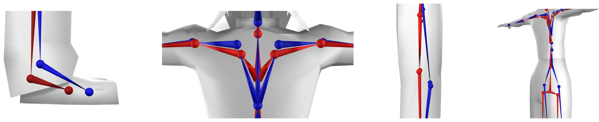
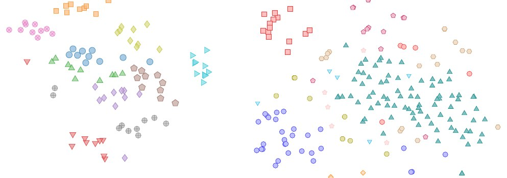
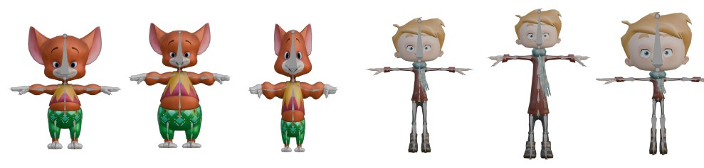
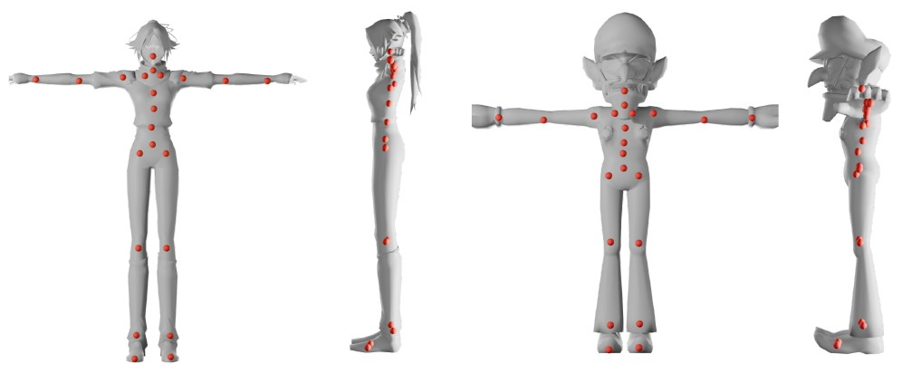
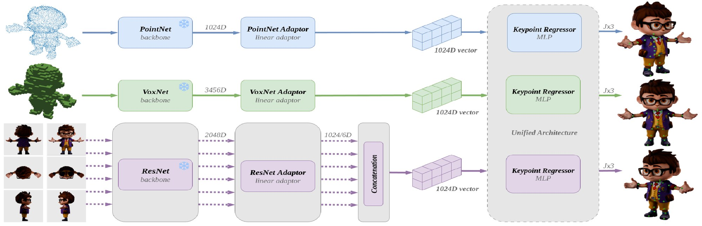

ARTIST: Adaptive Humanoid Rigging by Transferring Individual Style with Optimal Transport
Abstract
Automatic rigging transforms static meshes into articulated characters by predicting skeletal structure. However, rigging is inherently subjective: artists develop personal preferences for joint placement. Current approaches omit this aspect, learning only the average “style” of their training data. We quantify inter-artist variance through a user study and dataset analysis, demonstrating this notion of “rigging style”. We propose a voxel-based model leveraging pretrained 3D backbones that outperforms state-of-the-art methods. We also introduce a one-shot style adaptation method based on volumetric optimal transport: given a single artist-rigged example, we transfer its stylistic joint placements to any new character. This improves any rigging model and supports different bone counts or hierarchies, reconciling automatic rigging with artistic variability.
Rigging is subjective
We asked 10 professional rigging artists to rig the same set of 10 characters. Pairwise Chamfer distances between their annotations reveal significant inter-artist differences, especially on clavicles, spines, knees and toes. These differences are not noise: each artist is consistent across characters. A t-SNE of each annotation's offset from the mean annotation clusters by artist (Silhouette 0.168). The same structure appears in the RigNet-v1 dataset when characters are grouped by video game of origin (Silhouette 0.101). In other words, “rigging style” exists, and a network trained on mixed data only learns the average.

Stylistic differences in rigging between two artists (left to right: feet, clavicles, knees, spines).

Left: t-SNE of each artist's annotation offset from the mean annotation (one color per artist). Right: t-SNE of TARig's error with respect to ground truth on RigNet-v1 (one color per video game of origin).
Method
Voxel rigging network
A pretrained VoxNet backbone on a 256³ occupancy grid, followed by convolutional layers and an MLP head, regresses 21 joint positions. It is trained end-to-end with an MSE loss.
Shape-aware augmentation
9,000+ characters (HumanRig, Mixamo, RigNet-v1) are deformed with per-region lattice scaling (head, torso, arms, legs) for robustness to varied body proportions.
One-shot style transfer
Volumetric optimal transport between an artist-rigged example and the target character carries the example's joint placements over. No training is required.

Examples of our lattice-based data augmentation (original characters on the left).
Style adaptation via volumetric optimal transport
We sample points inside the volumes of the example character QE and the target character QT, using the voxel grid with a shrinkwrap step for better surface coverage. We then solve an entropy-regularized optimal transport problem (Sinkhorn) between the two distributions.
Body-part-balanced marginals. Uniform marginals fail when proportions differ: for instance, the example's chin can get mapped to the target's nose. We therefore use our rigging network to predict bones on both characters, compute voxel-based skinning weights (geodesic voxel binding), and choose marginals so that every bone receives the same total mass in both distributions. A fast iterative scheme exploits the sparsity of the skinning weights.
Bone transfer. Each artist-placed bone of the example is moved into the target by interpolating the transport plan over its k nearest samples (Shepard / inverse-distance weighting). The transfer is independent of the skeleton definition, so it works with any number of joints and any hierarchy, and it can be plugged on top of any rigging model.
Results
Joint prediction (test set of 1,382 characters)
| Method | MAE ↓ | MSE ↓ | CD-J2J ↓ | CD-J2B ↓ | CD-B2B ↓ |
|---|---|---|---|---|---|
| ResNet (multi-view images) | 0.0444 | 0.0013 | 0.0357 | 0.0262 | 0.0258 |
| PointNet (point cloud) | 0.0532 | 0.0022 | 0.0418 | 0.0323 | 0.0315 |
| VoxNet (voxels) | 0.0296 | 0.0007 | 0.0248 | 0.0166 | 0.0156 |
| RigNet | 0.0302 | 0.0025 | 0.0302 | 0.0249 | 0.0245 |
| TARig | 0.0277 | 0.0020 | 0.0277 | 0.0222 | 0.0221 |
| Ours | 0.0166 | 0.0005 | 0.0216 | 0.0143 | 0.0123 |
| Artists (user study, 10 characters) | 0.0197 | 0.0002 | 0.0170 | 0.0162 | 0.0080 |

Predictions of our rigging network on two unseen characters from the test set.
Style adaptation with optimal transport (OT)
| Method | MAE ↓ | MSE ↓ | CD-J2J ↓ | CD-J2B ↓ | CD-B2B ↓ |
|---|---|---|---|---|---|
| RigNet-v1 dataset | |||||
| TARig | 0.0248 | 0.0003 | 0.0218 | 0.0144 | 0.0121 |
| TARig + OT | 0.0220 | 0.0002 | 0.0206 | 0.0127 | 0.0108 |
| User-study characters | |||||
| TARig | 0.0234 | 0.0003 | 0.0219 | 0.0127 | 0.0099 |
| TARig + OT | 0.0219 | 0.0002 | 0.0210 | 0.0105 | 0.0081 |
| Ours | 0.0201 | 0.0004 | 0.0188 | 0.0126 | 0.0110 |
| Ours + OT | 0.0182 | 0.0002 | 0.0171 | 0.0101 | 0.0085 |
OT style adaptation improves every metric, for our network and for TARig alike. Results of Ours on RigNet-v1 are not reported because it was part of the training set.
Previous work
ARTIST extends our SIGGRAPH Asia 2025 poster, which compared 3D input representations for rigging and introduced the user study.

Comparing 3D Data Representations for Keypoint Estimation in Humanoid Characters
Jeanne-Emma Lefèvre, Théo Cheynel, Thomas Daniel
SIGGRAPH Asia 2025 Posters, Hong Kong
We build a multimodal dataset (multi-view images, voxels, point clouds) and train one keypoint regressor per modality with frozen pretrained backbones (ResNet-50, VoxNet, PointNet). Voxels perform best and outperform TARig. A user study with expert riggers gives a human-disagreement baseline for interpreting rigging metrics.
ACM DL PDFBibTeX
@inproceedings{lefevre2026artist,
booktitle = {Eurographics 2026 - Short Papers},
editor = {Musialski, Przemyslaw and Lim, Isaak},
title = {{ARTIST: Adaptive Humanoid Rigging by Transferring Individual Style with Optimal Transport}},
author = {Lef{\`e}vre, Jeanne-Emma and Cheynel, Th{\'e}o and El Khalifi, Omar and Daniel, Thomas and Bellot-Gurlet, Baptiste},
year = {2026},
publisher = {The Eurographics Association},
ISSN = {2309-5059},
ISBN = {978-3-03868-299-8},
DOI = {10.2312/egs.20261001}
}
@inproceedings{lefevre2025comparing,
title = {Comparing 3D Data Representations for Keypoint Estimation in Humanoid Characters},
author = {Lef{\`e}vre, Jeanne-Emma and Cheynel, Th{\'e}o and Daniel, Thomas},
booktitle = {SIGGRAPH Asia 2025 Posters},
year = {2025},
publisher = {ACM},
doi = {10.1145/3757374.3771481}
}